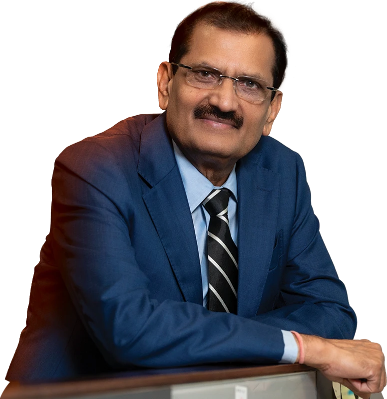

Built to Deliver.
Scaling to Lead.
Dear Esteemed Shareholders,
It is a great honour to address you in my capacity as Global Chief Executive Officer of Sterling and Wilson Renewable Energy Group. This Annual Report captures a year in which the organisation proved, decisively, that scale and quality of execution can and must coexist.
Execution as a Strategic Differentiator
At SWREL, we believe that in the EPC business, the truest test of strategy is delivery. Ideas, pipelines and order books matter enormously, but they only create lasting value when they culminate in projects commissioned on time, within budget and to the highest standards of quality and safety. FY 2026 was a year in which we raised the bar on every one of these dimensions.
We commissioned a record 4.5 GW AC equivalent to ~5.9 GW DC capacity across multiple projects in India and overseas.
Managing projects across diverse geographies, contract structures and site conditions requires a degree of operational discipline that cannot be improvised. Over the course of this year, we made deliberate investments in our project management infrastructure, strengthening our centralised command-and-control systems, standardising our construction methodologies and deploying technology to enhance real-time visibility across every active site. The result was an execution engine that performed at a scale and consistency that few peers in our industry can match.
We are the only elite solar EPC player in the country currently working on GW scale projects with three of India’s biggest RE developers in NTPC, Adani Green and Coal India.
In this business, the truest measure of strategy is delivery. When our clients hand us a project, they are placing their trust in our ability to turn ambition into operational reality, and FY 2026 showed that SWREL delivers.
The Power of Repeat Business: A Testament to Trust
One of the most telling indicators of our operational maturity is the proportion of our new order inflows that came from clients who had entrusted us with work before. In FY 2026, a significant majority of our 12 new project wins were from repeat customers, a statistic that speaks louder than any award or ranking. When a developer awards a second or third project to the same EPC contractor, they are not merely satisfied; they are confident.
This confidence is built project by project, through the small and large choices that define execution quality—how we manage supply chain disruptions, respond to unforeseen site conditions, communicate proactively with clients when challenges arise and bring our full engineering and procurement capabilities to bear when it matters most. Our client relationships are, in many ways, our most valuable long-term asset, and we are committed to nurturing them with every project we undertake.
Turnkey Projects
Technology and Innovation at the Core of Delivery
The complexity of what we do—engineering, procuring, constructing and commissioning utility-scale solar projects across geographies— demands that we continuously innovate in our methods. We have invested substantially in digitising our project delivery workflows, from procurement tracking and material logistics to quality inspection and commissioning documentation.
Our design and engineering teams have embraced advanced simulation tools, energy yield modelling and CFD analysis to produce optimised plant layouts that maximise generation output for our clients. In our Hybrid and Standalone BESS projects, we have developed in-house expertise in Energy Simulation and BESS Sizing & Augmentation Strategy. As a reputed and experienced EPC in the renewable energy sector, we have been able to maintain strong relationships and long-term supply agreements with leading battery manufacturers. This engineering depth is the product of sustained investment in talent and tooling, and it gives us a genuinely differentiated technical edge.
The BESS market in India is at the cusp of exponential growth and we are positioning ourselves to innovate and provide the most cost efficient EPC solutions to our clients.
Innovation at SWREL is about building delivery systems that consistently produce better outcomes for our clients, faster, and at a lower cost than the alternatives.
Scaling Our Team for the Opportunity Ahead
Our global workforce grew from approximately 2,500 to 3,459 during the fiscal year, which is an increase of 40%, as we proactively built the human capital needed to execute a growing pipeline of GW-scale projects. This was deliberate capacitybuilding in anticipation of a market opportunity we have been tracking carefully and as seen in the GW scale order wins with Adani Green and Coal India this year.
We have strengthened our project management and engineering bench, deepened our procurement expertise and invested in training programmes that ensure every member of our team operates to a single global standard of quality and safety. Our commitment to safety remains absolute- zero compromise, on every site, in every country. The OHSSAI recognitions we have received are welcome affirmations, but the real measure of our safety culture is the daily behaviour of every worker and supervisor across our project sites.
A 40% Y-O-Y Increase
Building for FY 2027 and Beyond
As we enter FY 2027, our bid pipeline of approximately 31 GW, of which over 88% is in India, reflects the depth of opportunity available to us in our core market. The BESS market looks primed for strong growth from this year as emphasis on Battery Storage gains prominence. We also anticipate a very large domestic client to start execution of its multi-year, multi-GW renewables roll-out this fiscal.
Our Domestic EPC Unexecuted Order Value stands at INR 9,251 crore, providing clear revenue visibility for the year ahead. We have also been declared the lowest bidder for a major 1.2 GW DC turnkey project from Coal India, which, on conversion, will represent a landmark public sector mandate for SWREL. Internationally, Africa, Middle East and Europe remain our priority markets. We have demonstrated that post-COVID international projects in Africa and Europe can be executed at margins that are attractive and, in several cases, superior to domestic benchmarks. Our disciplined approach to international bidding, prioritising risk-adjusted returns over volume, will remain the guiding principle as we grow this segment responsibly. Meanwhile, we continue to monitor solar module price dynamics closely, and I am satisfied that our existing order book carries adequate contractual protection to manage near-term commodity risks.
I am grateful to our Board for their guidance, to our clients for their trust, to our supply chain partners for their collaboration and above all, to the men and women of SWREL whose dedication to their craft is the foundation of everything we have achieved.
Chandra Kishore Thakur
Global CEO
Sterling and Wilson Renewable Energy Group